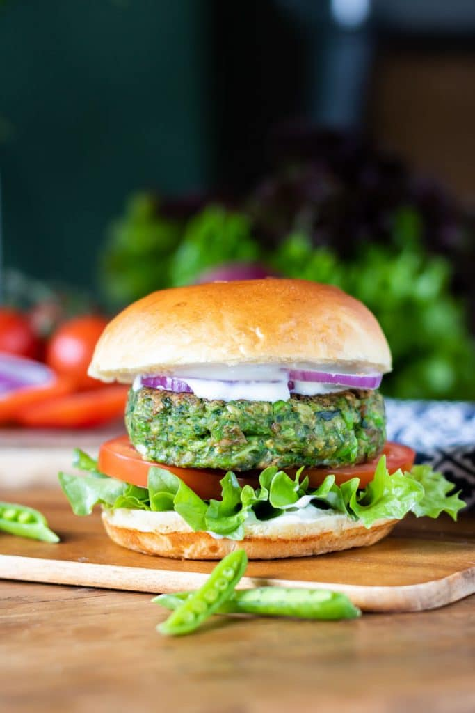

Spinich & Pea Burgers
Ingredients
- 1 Cup frozen peas
- 1/2 onion diced
- 1 Cup spinach
- 7.5 oz canned green lentils (drained and rinsed)
- 3/4 Cup oatmeal (dry)
- 1 TBSP chopped parsley
- 1 tsp chopped garlic
- Salt and pepper to taste
Directions
- Defrost peas
- Take the dry oatmeal and buzz it in a food processor until fine like flour.
- Add the peas, spinach, lentils, onion, parsley and garlic into the food processor. Blend until coarsely blended.
- Shape into burger shapes. They hold together better if you freeze them first, but if you want them now freeze for at least 30 minutes before cooking.
- Pre-heat oven to 350oF. Place the burgers evenly apart on a baking tray. Make sure to oil the pan a little. Bake for 30 minutes total, flipping half way.
- Build burger however you want!

Want a link to the orginal recipe?
Click Here!
Contact Me
 Email Me!
To University Of Montana Contact
Email Me!
To University Of Montana Contact